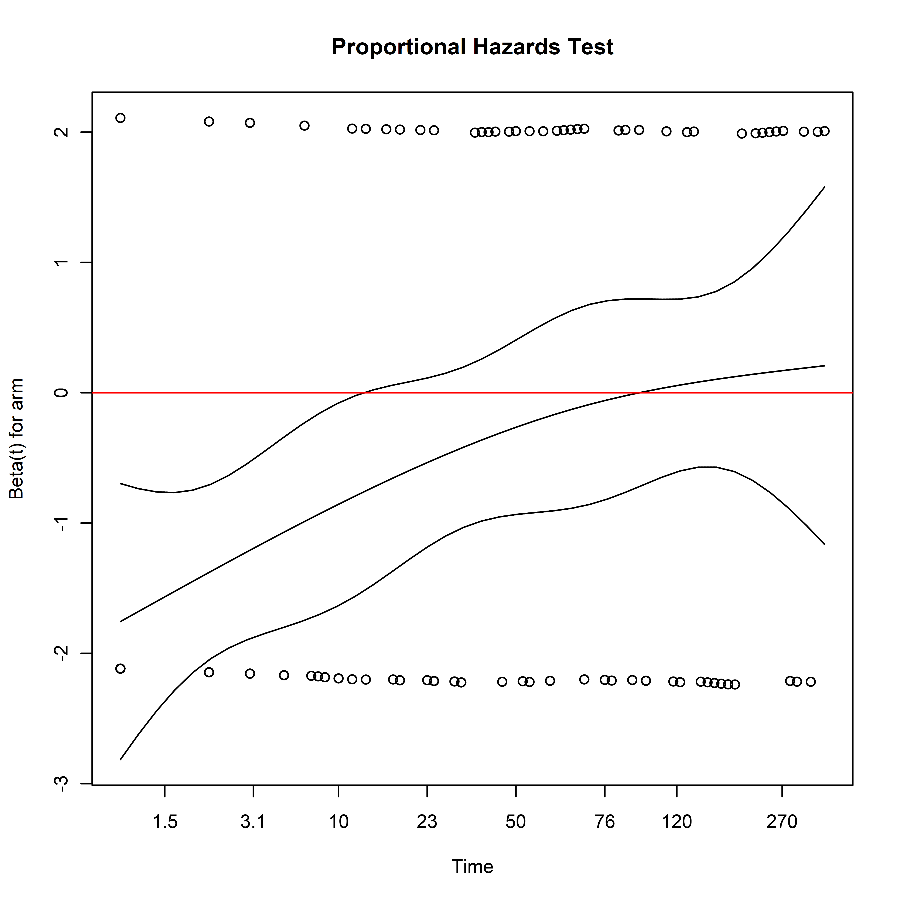

Chapter 7 Time-To-Event Outcomes
We will illustrate covariate adjustment for time-to-event outcomes using the simulated MISTIE III dataset. The code to load this data is in the chapter on Using R. Here we are interested in whether the minimally invasive surgery procedure improves survival in the first 90 days after randomization.
7.1 Unadjusted Estimators
Before discussing covariate adjustment in time-to-event outcomes, it is worth reviewing unadjusted methods, the assumptions needed for their valid use, and their interpretation.
The Kaplan-Meier (or K-M) estimate of the survival function is one of the most ubiquitous approaches to time-to-event outcomes. The K-M estimator assumes that censoring occurs independent of event time in each treatment arm. This is often violated when baseline covariates associated with event times and dropout (Dı́az et al. 2018).
The Logrank test and the Cox Proportional Hazards model are closely related to each other and the proportional hazards assumption. The Logrank Test provides a valid test of the null hypothesis if censoring is independent of treatment or the event time in each treatment arm (Lancker, Dukes, and Vansteelandt 2021). While its validity does not depend on the proportional hazards (PH) assumption, its power is greatest when the PH assumption is true. When the PH assumption does not hold, weighted logrank tests can improve power by emphasizing different parts of the survival curve (Lin and León 2017).
The Cox Proportional Hazards (PH) Model provides a valid test of the null hypothesis if the sandwich covariance estimator is used and censoring is either conditionally independent of treatment assignment given the covariates or conditionally independent of the covariates given treatment assignment. As previously mentioned, the proportional hazards assumption may not be known to hold a priori, presents difficulties in interpretation when the assumption does not empirically hold, and does not quantify the amount of time a participant can expect to be event free under a particular treatment (Rudser, LeBlanc, and Emerson 2012).
Analyses of the Restricted Mean Survival Time typically assume that \(\ldots\). Analyses of the Survival Probability typically assume that \(\ldots\).
7.1.2 Logrank Test
The Logrank test (and the \(G^{\rho}\) family of tests) can be performed using the survival::survdiff function:
survival::survdiff(
formula =
Surv(time = days_on_study,
event = died_on_study) ~ arm,
data = sim_miii
)## Call:
## survival::survdiff(formula = Surv(time = days_on_study, event = died_on_study) ~
## arm, data = sim_miii)
##
## N Observed Expected (O-E)^2/E (O-E)^2/V
## arm=medical 250 64 49.6 4.19 8.06
## arm=surgical 250 40 54.4 3.82 8.06
##
## Chisq= 8.1 on 1 degrees of freedom, p= 0.0057.1.3 Cox Proportional Hazards Model
The Cox Proportional Hazards model can be fitted using the survival::coxph function: the specification of the model is done using a formula object, with a survival::Surv object on the left hand side, and the covariates specified on the right hand side. To obtain the robust variance estimate of the coefficients, the robust argument should be set to TRUE. See ?survival::coxph for more details, such as handling of tied survival times. Note that when the model only includes treatment assignment, it is estimating a marginal estimand, the marginal hazard ratio: when baseline covariates are included, it is estimating a conditional estimand, the hazard ratio conditional on the specified covariates.
unadjusted_cox <-
survival::coxph(
formula =
Surv(time = days_on_study,
event = died_on_study) ~ arm,
ties = "efron",
robust = TRUE,
data = sim_miii
)
summary(unadjusted_cox)## Call:
## survival::coxph(formula = Surv(time = days_on_study, event = died_on_study) ~
## arm, data = sim_miii, ties = "efron", robust = TRUE)
##
## n= 500, number of events= 104
##
## coef exp(coef) se(coef) robust se z Pr(>|z|)
## armsurgical -0.5670 0.5672 0.2016 0.1995 -2.841 0.00449 **
## ---
## Signif. codes: 0 '***' 0.001 '**' 0.01 '*' 0.05 '.' 0.1 ' ' 1
##
## exp(coef) exp(-coef) lower .95 upper .95
## armsurgical 0.5672 1.763 0.3836 0.8387
##
## Concordance= 0.575 (se = 0.024 )
## Likelihood ratio test= 8.16 on 1 df, p=0.004
## Wald test = 8.07 on 1 df, p=0.004
## Score (logrank) test = 8.12 on 1 df, p=0.004, Robust = 8.03 p=0.005
##
## (Note: the likelihood ratio and score tests assume independence of
## observations within a cluster, the Wald and robust score tests do not).Tests for the proportional hazards assumption using weighted residuals can be obtained using survival::cox.zph.
## chisq df p
## arm 9.85 1 0.0017
## GLOBAL 9.85 1 0.0017In addition to test statistics, plots can be used to visualize how covariate effects vary by time on study:
# Plot Proportionality Results
plot(unadjusted_cox_ph_test,
main = "Proportional Hazards Test")
abline(h = 0, col = "red")
Here we see that the hazard ratio for treatment arm is negative earlier in the study, reflecting lower mortality after randomization in the surgical arm. The magnitude of this effect decreases with time, eventually becoming indistinguishable from zero. Since the assumption that the hazards are approximately proportional over the follow-up period is not empirically supported, this complicates the interpretation of the estimated hazard ratio. The estimate represents a weighted average of the time-varying hazard ratio: what further complicates interpretation is that the weighting of the time-varying hazards depends on the distribution of censoring times, which are considered a nuisance parameter (Rudser, LeBlanc, and Emerson 2012).
Setting aside the issues of the proportional hazards assumption, based on the unadjusted analysis, the hazard of death would be 43% lower if all eligible patients were assigned to treatment instead of control.
7.1.4 Survival Probability
surv_metadata_unadj <-
adjrct::survrct(
outcome.formula =
Surv(days_on_study, died_on_study) ~ tx,
trt.formula = tx ~ 1,
data = sim_miii,
)## Survival Probability Estimator: tmle## Marginal Survival Probability: Pr(T > 90 | A = a)## Treatment Arm## Estimate: 0.9## Std. error: 0.02## 95% CI: (0.86, 0.93)## Control Arm## Estimate: 0.8## Std. error: 0.03## 95% CI: (0.75, 0.85)## Treatment Effect: Pr(T > 90 | A = 1) - Pr(T > 90 | A = 0)## Additive effect## Estimate: 0.1## Std. error: 0.03## 95% CI: (0.03, 0.16)Without covariate adjustment, the probability of surviving at 90 days post randomization was 10 percent higher if everyone were assigned to treatment than if everyone were assigned to control.
7.1.5 Restricted Mean Survival Time (RMST)
The survRM2 package can be used to obtain the RMST in each arm, as well as differences and ratios of the RMST between treatment arms:
with(
sim_miii,
survRM2::rmst2(
time = days_on_study,
status = died_on_study,
arm = tx,
tau = 90
)
)##
## The truncation time: tau = 90 was specified.
##
## Restricted Mean Survival Time (RMST) by arm
## Est. se lower .95 upper .95
## RMST (arm=1) 84.510 1.160 82.237 86.783
## RMST (arm=0) 75.744 1.932 71.957 79.531
##
##
## Restricted Mean Time Lost (RMTL) by arm
## Est. se lower .95 upper .95
## RMTL (arm=1) 5.490 1.160 3.217 7.763
## RMTL (arm=0) 14.256 1.932 10.469 18.043
##
##
## Between-group contrast
## Est. lower .95 upper .95 p
## RMST (arm=1)-(arm=0) 8.766 4.350 13.182 0
## RMST (arm=1)/(arm=0) 1.116 1.054 1.181 0
## RMTL (arm=1)/(arm=0) 0.385 0.235 0.630 0This can also be done using the adjrct package. Once the “survival metadata” has been produced using the adjrct::survrct function, the metadata can be passed to the adjrct::rmst function.
## RMST Estimator: tmle## Marginal RMST: E(min[T, 90] | A = a)## Treatment Arm## Estimate: 84.51## Std. error: 1.16## 95% CI: (82.24, 86.78)## Control Arm## Estimate: 75.74## Std. error: 1.93## 95% CI: (71.95, 79.54)## Treatment Effect: E(min[T, 90] | A = 1) - E(min[T, 90] | A = 0)## Additive effect## Estimate: 8.77## Std. error: 2.26## 95% CI: (4.34, 13.19)Based on the unadjusted analysis, patients can expect to live 8.8 days longer in the first 90 days if everyone were assigned to treatment than if everyone were assigned to control.
7.2 Covariate-Adjusted Estimators
The code to produce a covariate adjusted analysis is usually a straightforward modification of the code used for an unadjusted analysis: in many cases, it is simply a matter of adding the baseline covariates into the regression model formula.
Care must be taken, however, to evaluate the assumptions of the models being used where applicable, and ensure that the interpretation is consistent with the target of inference (marginal vs. conditional estimands).
7.2.1 Covariate Adjusted Estimates of Survival Function
Covariate adjustment can not only improve upon the precision of the Kaplan-Meier estimate of the survival function, it can also provide an estimate that requires less stringent assumptions for validity.
7.2.2 Conditional Hazard Ratio
As noted before, covariates can be added to the Cox model, however the resulting estimates are no longer marginal quantities, they are conditional on the specification of the covariates:
adjusted_cox <-
survival::coxph(
formula =
Surv(time = days_on_study,
event = died_on_study) ~ arm +
age + male + hx_cvd + hx_hyperlipidemia +
on_anticoagulants + on_antiplatelets + ich_location +
ich_s_volume + ivh_s_volume + gcs_category,
ties = "efron",
robust = TRUE,
data = sim_miii
)
summary(adjusted_cox)## Call:
## survival::coxph(formula = Surv(time = days_on_study, event = died_on_study) ~
## arm + age + male + hx_cvd + hx_hyperlipidemia + on_anticoagulants +
## on_antiplatelets + ich_location + ich_s_volume + ivh_s_volume +
## gcs_category, data = sim_miii, ties = "efron", robust = TRUE)
##
## n= 500, number of events= 104
##
## coef exp(coef) se(coef) robust se z
## armsurgical -0.509103 0.601035 0.203415 0.204406 -2.491
## age 0.036377 1.037047 0.009365 0.008305 4.380
## male1. Male -0.304160 0.737743 0.213932 0.221949 -1.370
## hx_cvd1. Yes 0.265474 1.304048 0.287065 0.317013 0.837
## hx_hyperlipidemia1. Yes 0.162135 1.176019 0.233839 0.240778 0.673
## on_anticoagulants1. Yes 0.288125 1.333925 0.368071 0.407977 0.706
## on_antiplatelets1. Yes -0.478800 0.619526 0.266844 0.276044 -1.735
## ich_locationLobar -0.048168 0.952973 0.216688 0.220998 -0.218
## ich_s_volume 0.008901 1.008941 0.006216 0.006349 1.402
## ivh_s_volume 0.035311 1.035942 0.022026 0.024108 1.465
## gcs_category2. Moderate (9-12) -0.689235 0.501960 0.222362 0.229556 -3.002
## gcs_category3. Mild (13-15) -1.318338 0.267580 0.298357 0.293425 -4.493
## Pr(>|z|)
## armsurgical 0.01275 *
## age 1.19e-05 ***
## male1. Male 0.17056
## hx_cvd1. Yes 0.40236
## hx_hyperlipidemia1. Yes 0.50071
## on_anticoagulants1. Yes 0.48005
## on_antiplatelets1. Yes 0.08283 .
## ich_locationLobar 0.82746
## ich_s_volume 0.16093
## ivh_s_volume 0.14300
## gcs_category2. Moderate (9-12) 0.00268 **
## gcs_category3. Mild (13-15) 7.03e-06 ***
## ---
## Signif. codes: 0 '***' 0.001 '**' 0.01 '*' 0.05 '.' 0.1 ' ' 1
##
## exp(coef) exp(-coef) lower .95 upper .95
## armsurgical 0.6010 1.6638 0.4026 0.8972
## age 1.0370 0.9643 1.0203 1.0541
## male1. Male 0.7377 1.3555 0.4775 1.1398
## hx_cvd1. Yes 1.3040 0.7668 0.7006 2.4274
## hx_hyperlipidemia1. Yes 1.1760 0.8503 0.7336 1.8852
## on_anticoagulants1. Yes 1.3339 0.7497 0.5996 2.9676
## on_antiplatelets1. Yes 0.6195 1.6141 0.3607 1.0642
## ich_locationLobar 0.9530 1.0493 0.6180 1.4696
## ich_s_volume 1.0089 0.9911 0.9965 1.0216
## ivh_s_volume 1.0359 0.9653 0.9881 1.0861
## gcs_category2. Moderate (9-12) 0.5020 1.9922 0.3201 0.7872
## gcs_category3. Mild (13-15) 0.2676 3.7372 0.1506 0.4756
##
## Concordance= 0.73 (se = 0.023 )
## Likelihood ratio test= 63.8 on 12 df, p=5e-09
## Wald test = 72.35 on 12 df, p=1e-10
## Score (logrank) test = 66.35 on 12 df, p=2e-09, Robust = 50.27 p=1e-06
##
## (Note: the likelihood ratio and score tests assume independence of
## observations within a cluster, the Wald and robust score tests do not).The adjusted Cox model should also be assessed for the proportional hazards assumption:
## chisq df p
## arm 1.00e+01 1 0.0015
## age 1.03e-01 1 0.7483
## male 9.17e-01 1 0.3382
## hx_cvd 5.89e-04 1 0.9806
## hx_hyperlipidemia 6.13e-02 1 0.8045
## on_anticoagulants 2.25e-02 1 0.8807
## on_antiplatelets 1.60e-01 1 0.6893
## ich_location 7.23e+00 1 0.0072
## ich_s_volume 3.18e+00 1 0.0746
## ivh_s_volume 3.75e-04 1 0.9846
## gcs_category 3.14e+00 2 0.2078
## GLOBAL 2.70e+01 12 0.0077In addition to the treatment violating the proportional hazards assumption, covariates also violate this assumption, leading to the same challenges in interpretation mentioned earlier.
Setting aside the issues of the proportional hazards assumption and potential model misspecification, based on the adjusted analysis conditioning on the covariates in the model, the adjusted hazard of death would be 40% lower if all eligible patients were assigned to treatment instead of control.
7.2.3 Marginal Hazard Ratio
One way to obtain a covariate-adjusted marginal estimate of the hazard ratio is through the speff2trial package. The syntax is similar to the covariate adjusted Cox model. The argument fixed = TRUE specifies that no variable selection should take place. Note that the treatment variable trt.id should be a binary vector, not a factor. While we have established that the proportional hazards assumption is violated in this case, below is an example of how to carry out the analysis:
library(speff2trial)
surv_marginal_hr_adj <-
speff2trial::speffSurv(
formula =
survival::Surv(days_on_study, died_on_study) ~
age + male + hx_cvd + hx_hyperlipidemia +
on_anticoagulants + on_antiplatelets + ich_location +
ich_s_volume + ivh_s_volume + gcs_category,
data =
# Note: `trt.id` must be 0/1, not factor
sim_miii %>%
as.data.frame,
trt.id = "tx",
fixed = TRUE
)
surv_marginal_hr_adj_table <-
data.frame(
HR = exp(surv_marginal_hr_adj$beta),
summary(surv_marginal_hr_adj)$tab
)
surv_marginal_hr_adj_table## HR Log.HR SE LowerCI UpperCI p
## Prop Haz 0.5672352 -0.5669813 0.2015897 -0.9620899 -0.17187265 0.004915033
## Speff 0.6359396 -0.4526517 0.1845075 -0.8142797 -0.09102368 0.014155331The hazard of death would be 36% lower if all eligible patients were assigned to treatment instead of control.
The relative efficiency of an adjusted analysis can be computed from the resulting object:
relative_efficiency_spe_mhr <-
with(
data = surv_marginal_hr_adj,
expr = {as.numeric(varbeta["Prop Haz"]/varbeta["Speff"])}
)
relative_efficiency_spe_mhr## [1] 1.193737Covariates improve the efficiency of estimating the marginal hazard ratio by 19.4%.
7.2.4 Survival Probability
Producing covariate-adjusted estimates of the survival metadata follows the same syntax as before with adjrct::survrct. The formulas can be used to include terms for the baseline covariates in both the outcome and treatment models:
# Note: this can be time-consuming to compute
surv_metadata_adj <-
adjrct::survrct(
outcome.formula =
Surv(days_on_study, died_on_study) ~
tx + age + male + hx_cvd + hx_hyperlipidemia +
on_anticoagulants + on_antiplatelets + ich_location +
ich_s_volume + ivh_s_volume + gcs_category,
trt.formula =
tx ~
age + male + hx_cvd + hx_hyperlipidemia +
on_anticoagulants + on_antiplatelets + ich_location +
ich_s_volume + ivh_s_volume + gcs_category,
data = sim_miii
)Once the metadata is computed, the syntax to produce the results is identical:
The results can be printed using the base::print function:
## Survival Probability Estimator: tmle## Marginal Survival Probability: Pr(T > 90 | A = a)## Treatment Arm## Estimate: 0.89## Std. error: 0.02## 95% CI: (0.85, 0.93)## Control Arm## Estimate: 0.81## Std. error: 0.02## 95% CI: (0.77, 0.86)## Treatment Effect: Pr(T > 90 | A = 1) - Pr(T > 90 | A = 0)## Additive effect## Estimate: 0.08## Std. error: 0.03## 95% CI: (0.02, 0.14)The probability of surviving at 90 days post randomization was 8 percent higher if everyone were assigned to treatment than if everyone were assigned to control.
The relative efficiency of an adjusted analysis can be computed from the resulting object:
Calculating the relative efficiency gives:
relative_efficiency_surv_prob <-
(surv_prob_unadj$estimates[[1]]$std.error^2/
surv_prob_adj$estimates[[1]]$std.error^2)
relative_efficiency_surv_prob[1] 1.084233
Covariates improve the efficiency of estimating the survival probability by 8.4%.
7.2.5 Restricted Mean Survival Time (RMST)
Similar to the survival probability, once the metadata is computed, the syntax to produce the covariate-adjusted RMST is identical:
## RMST Estimator: tmle## Marginal RMST: E(min[T, 90] | A = a)## Treatment Arm## Estimate: 84.28## Std. error: 1.19## 95% CI: (81.95, 86.61)## Control Arm## Estimate: 76.65## Std. error: 1.77## 95% CI: (73.17, 80.13)## Treatment Effect: E(min[T, 90] | A = 1) - E(min[T, 90] | A = 0)## Additive effect## Estimate: 7.63## Std. error: 2.11## 95% CI: (3.49, 11.77)Patients can expect to live 7.6 days longer in the first 90 days if everyone were assigned to treatment than if everyone were assigned to control. Calculating the relative efficiency gives:
relative_efficiency_rmst <-
(rmst_unadj$estimates[[1]]$std.error^2/
rmst_adj$estimates[[1]]$std.error^2)
relative_efficiency_rmst[1] 1.138953
Covariates improve the efficiency of estimating the RMST by 13.9%.